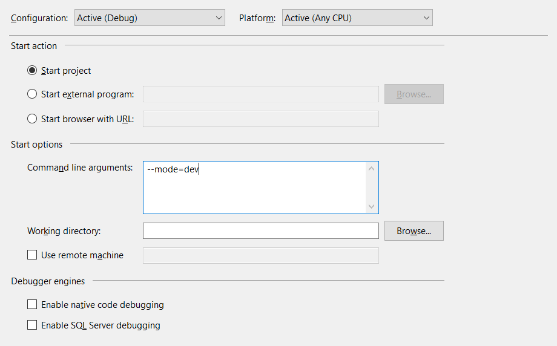

Getting started
Work with Neutronium templates
Neutronium Vue Application
Vue start-up project shipped with neutronium vue-cli plugin that uses webpack to bundle javascript files. Use:
npm run serveto develop application in the browser.
In this mode, the application is using data provided by the\data\vm.cjsonfile. Use Neutroniumexportcommand to generate such file.npm run liveto serve js file in way that can be used in hot-reload mode. See below.npm run buildto create js file that while be loaded and used inNeutronium application.
This application can be runt in 3 modes:
livedevelopment mode with hot-reload enable. In this mode, it is possible to edit javascript, CSS and HTML and to see the changes in a running Neutronium application. Note: when running, it is not needed to run manuallynpm run livethis will be called automatically by the application.devtest mode: Neutronium debug is allowed but files from the build are used. No hot-reloadprodproduction mode: no Neutronium debug allowed. Build files are used
Switch between these modes using the command line argument:
Command line argument
Usage: --mode=live -m=dev --url=http://localhost:9090/index.html -u=http://localhost:9091/index.html Options: -m --mode=(live|dev|prod) Set application mode. -u --url=<uri> Set view url

Complete documentation can be found here
Neutronium.Vue.SPA
This template contains all of Neutronium Vue Application template features. In addition, it contains:
- Dependency injection using
CommonServiceLocatorpattern so that it is possible to switch IOC implementation. The template comes with Ninject but Neutronium ReactiveTrader is an example using Autofac. - Routing integrated with vue-router
- Localization via vue-i18n
Complete documentation can be found here
It can be used as a start-up for a new application as well as a starting point to create your own template
Check complete documentaion of the template
Creating a binding
HTMLViewControl and HTMLWindow uses DataContext dependency property as the current javascript ViewModel.
For example, considering an HTMLViewControl with a DataContext set to an instance of Person with:
public class ViewModelBase : INotifyPropertyChanged
{
public event PropertyChangedEventHandler PropertyChanged;
protected void Set<T>(ref T pnv, T value, string pn)
{
pnv = value;
PropertyChanged?.Invoke(this, new PropertyChangedEventArgs(pn));
}
}
public class Skill
{
public string Type { get;}
public string Name { get;}
public Skill (string name, string skillType)
{
Name = name;
Type = skillType;
}
}
public class Person: ViewModelBase
{
private string _LastName;
public string LastName
{
get { return _LastName; }
set { Set(ref _LastName, value, "LastName"); }
}
private string _Name;
public string Name
{
get { return _Name; }
set { Set(ref _Name, value, "Name"); }
}
public IList<Skill> Skills { get; private set; }
public ICommand RemoveSkill { get; private set; }
public Person()
{
Skills = new ObservableCollection<Skill>();
RemoveSkill = new RelayCommand<Skill>(s=> this.Skills.Remove(s));
}
}
A valid HTML view using vue would be:
<!doctype html>
<html>
<head>
<title>Vue.js Example</title>
</head>
<body>
<input type="text" v-model="Name" placeholder="First name" >
<ul>
<li v-for="skill in Skills">
<span>{{skill.Type}}:{{skill.Name}}</span>
<button @click="RemoveSkill.Execute(skill)">Remove skill</button>
</li>
</ul>
<div>
<h2>{{Name}}</h2>
<h2>{{LastName}}</h2>
</div>
</body>
</html>
That's it Neutronium will take care of tracking changes and updating the view accordingly.
Please see Knockout and Vue binding sections for more details.